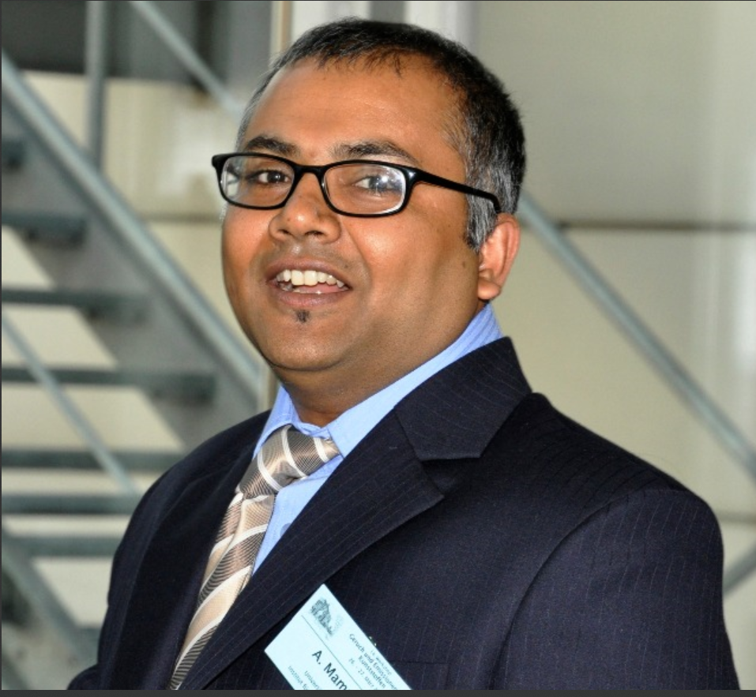
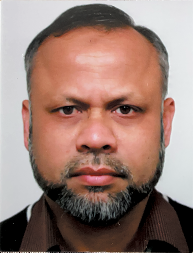
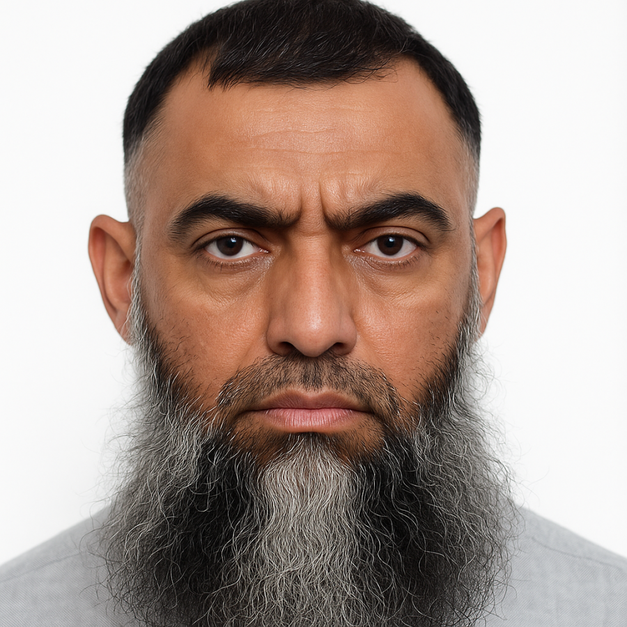
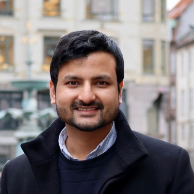

Vorstandsvorsitzend
Dr. Abdullah Al Mamun
Mit jahrelanger Erfahrung setzt er sich fuer die Interessen der Gemeinschaft ein.
Lokale Datenkopie
Ramadan KalenderTeam
Die BMCAG wird sichtbar durch engagierte Personen im Vorstand und durch Mitglieder, die den Wert der Gemeinschaft aus eigener Erfahrung beschreiben.

Vorstandsvorsitzend
Mit jahrelanger Erfahrung setzt er sich fuer die Interessen der Gemeinschaft ein.

Stellvertretende Vorsitzende
Er organisiert mit Kreativitaet zahlreiche Veranstaltungen fuer die Mitglieder.
Generalsekretaer
Er sorgt mit moderner Kommunikation fuer eine starke Vernetzung innerhalb der Community.
Stimmen
"Seitdem ich Teil der BMCAG bin, habe ich wertvolle Freundschaften geschlossen und fuehle mich verbunden."

Mitglied
"Die Unterstuetzung von BMCAG bei unseren Veranstaltungen hat unsere Gemeinschaft enger zusammengebracht."
Mitglied
"Ich bin sehr zufrieden mit der Unterstuetzung und den regelmaessigen Aktivitaeten des Vereins."

Mitglied
"Durch die BMCAG habe ich nicht nur Freunde gefunden, sondern auch wichtige berufliche Kontakte geknuepft."
Mitglied
"Als neues Mitglied fuehle ich mich sofort willkommen und geschaetzt in dieser wunderbaren Gemeinschaft."
Mitglied
"Dank der BMCAG habe ich ein starkes Netzwerk gefunden, das mich persoenlich und beruflich unterstuetzt."
Mitglied